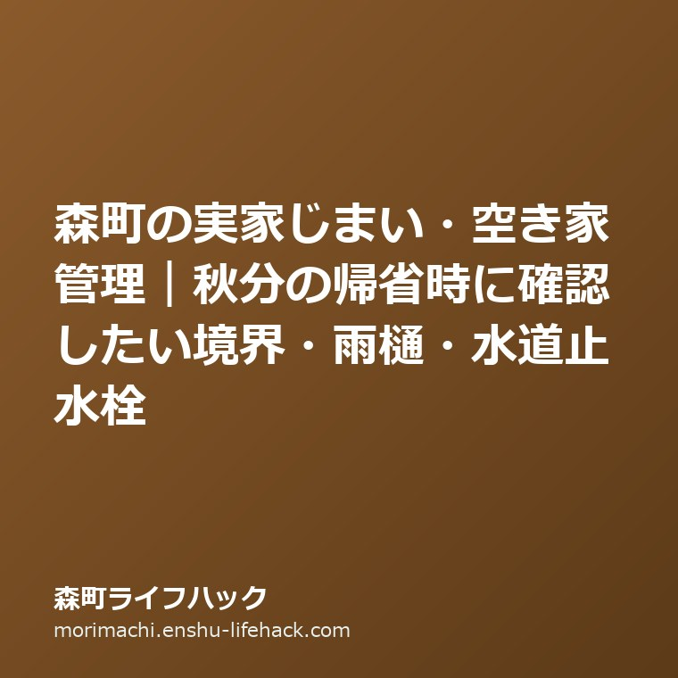

森町の実家じまい・空き家管理｜秋分の帰省時に確認したい境界・雨樋・水道止水栓
（水曜日・秋分の日）

Q. 秋分の帰省で森町の実家に戻りますが、空き家管理でまず確認すべき場所はどこですか？
まず確認したいのは敷地境界標の有無、台風シーズンを控えた雨樋の詰まり、そして水道メーターボックス内の止水栓の3箇所です。これらは大掛かりな費用をかけずに家族で目視確認でき、近隣トラブルや漏水・凍結破損などの重大事故を未然に防ぐ決定的な役割を果たします。今日は敷地を一周して境界杭を写真に撮り、水道の星型パイロットが止まっているかを確かめてください。
9月の秋分の日は、お彼岸の墓参りや親族の集まりに合わせて、普段は遠方に暮らす家族が森町の実家へ戻ってくる大切な節目です。久しぶりに実家の玄関を開けると、懐かしい仏壇や茶の間の温もりに触れる一方で、庭の草木の伸び具合や外壁の色褪せ、どことなく湿気を含んだ室内の空気にハッとさせられる瞬間があるのではないでしょうか。
大石浩之（磐田市／不動産業）です。宅地建物取引士として、遠州森町や周辺地域で実家の売却、空き家の維持管理、実家じまいのご相談を数多くお受けしてきました。本記事では、2026年9月23日に森町役場や公的機関の公表資料を確認した上で、秋分の帰省という絶好のタイミングに家族全員で確認しておきたい「敷地境界」「雨樋・屋根」「水道メーターと止水栓」の実務的な点検項目と管理手順を詳しく整理します。
実家が空き家になっている場合や、高齢の親御さんが一人で暮らしている場合、離れて暮らす子ども世代は「何かあったらどうしよう」と常に心配を抱えています。しかし、遠隔地から心配しているだけでは具体的な解決にはつながりません。直接現地に足を運べる帰省の機会こそ、家族がそろって現状を目視し、客観的な事実を共有するための貴重なチャンスです。
建物の構造や売却前の調査については、前回の記事森町の実家売却に向けた建物状況調査の範囲でも詳しく解説しましたが、専門家に依頼する前段階として、持ち主であるご家族自身が目視で確認できる重要なポイントがたくさんあります。慌てて売却や解体を決断する前に、まずは実家の健康診断を行うような気持ちで点検を進めていきましょう。
敷地境界と境界標の確認｜お隣との越境トラブルを未然に防ぐ
森町の住宅地や山沿いの集落にある実家で、将来の売却や実家じまいの際に最も多くの時間と労力を要するのが「敷地境界の確定」です。昭和の時代やそれ以前から代々住み継がれてきた家では、隣家との間にブロック塀や生け垣があるものの、法的に有効な境界標（コンクリート杭や金属プレート）が地中に埋もれて見当たらなかったり、そもそも設置されていなかったりすることが珍しくありません。
秋分の帰省で実家に着いたら、ぜひ親御さんや兄弟と一緒に敷地の外周を歩いてみてください。敷地の四隅や屈折点に、十字や矢印の刻まれた境界標が頭を出しているかを目視で確認します。長年の落ち葉や雑草、土砂の流出によって隠れている場合も多いため、小さな移植ごてやほうきを持って探してみると見つかることがあります。
もし境界標が見つかったら、スマートフォンでその位置と周囲の景観が分かるように写真を撮影しておきましょう。写真が残っていれば、後日不動産業者や土地家屋調査士に相談する際、極めて有益な一次資料となります。親御さんが元気なうちに「昔からここがお隣の山田さんとの境目だと聞いている」といった生きた証言を聞き取っておくことも大切です。
境界の確認と同時に見落とせないのが、庭木や生け垣の「越境問題」です。夏の間に急激に成長した庭木の枝が隣家の敷地上空へ越境していたり、逆に隣の山林や敷地から竹や雑木が実家の敷地へ入り込んでいないかを点検します。秋から冬にかけては落ち葉の季節となり、雨樋や庭先にお隣の落ち葉が溜まることで近隣関係が気まずくなるケースが後を絶ちません。
民法の改正により、越境された側が催告した上で自ら枝を切り取ることができる規定が整えられましたが、円滑な近所付き合いを守る上では、越境している側の所有者が早めに気づいて剪定することが最善です。帰省時に家族でノコギリや剪定ばさみを使って手入れできる範囲を確認し、手に負えない巨木がある場合は地元の造園業者やシルバー人材センターへの依頼を検討しましょう。
台風シーズンを乗り切る雨樋と屋根の点検ポイント
9月下旬から10月にかけての遠州地方は、台風の接近や秋雨前線の活発化によって激しい雨風に見舞われやすい季節です。森町は太田川の上流に位置し、緑豊かな山並みに囲まれている美しい町ですが、その反面、山からの落ち葉や小枝が風で飛ばされて屋根や雨樋に堆積しやすい環境にあります。
実家の雨樋に落ち葉や泥が詰まると、激しい降雨の際に雨水が雨樋からあふれ出し、軒裏や外壁を直接濡らし続けることになります。これが長期間放置されると、外壁のひび割れから雨水が壁の内部へ侵入し、構造材である柱や土台を腐食させたり、白蟻の発生を招く最大の原因となります。
点検の際は、決して無理をして高齢の親御さんやご自身が屋根の上に登ってはいけません。脚立やはしごからの転落事故は命に関わります。地上から屋根の軒先を見上げ、雨樋が途中で垂れ下がっていないか、継ぎ手が外れていないか、草が生えていないかを双眼鏡やスマートフォンのズーム機能を使って確認するだけで十分です。
また、小雨が降っている時間帯があれば、傘をさして外から建物の周囲を観察してみてください。雨水が本来の竪樋（たてどい）を通って排水口へスムーズに流れているか、途中の継ぎ目から滝のように漏れ出していないかを見ることで、詰まりや破損の箇所が一目で分かります。
もし雨樋の破損や詰まりが見つかった場合は、放置せずに地元の工務店や屋根工事業者に修繕の見積もりを依頼します。早めの雨樋修理であれば数万円から十数万円程度で済む工事も、外壁や室内への漏水に発展してしまうと数百万円単位の改修工事になりかねません。被害が小さいうちに対処することが、家計を守る実利的な判断です。
水道メーターボックスと止水栓の位置確認｜漏水と凍結への備え
実家が空き家状態になっている場合、あるいは将来的に空き家になる予定がある場合、最も緊急性の高いトラブルの一つが「水道管の漏水と凍結破損」です。森町は南部と北部で気候の差があり、特に三倉地区や天方地区などの山間部では、真冬の夜間に氷点下まで冷え込み、給水管が凍結して破裂する事故が毎年発生しています。
秋分の帰省時に必ず行っていただきたいのが、敷地内の地面にある「水道メーターボックス（量水器）」の確認です。プラスチックや鋳鉄製の長方形のフタを開けると、水道メーターと並んで「止水栓（仕切弁）」が設置されています。長年開けていないボックスは、中に土砂が入り込んでいたり、クモの巣や落ち葉で埋もれてハンドルが見えなくなっていることがよくあります。
まずはボックス内の土や落ち葉を掻き出し、止水栓のバルブがスムーズに手で回るかどうかを確かめてください。金属製のハンドルが錆び付いて固着していると、いざ宅内で水漏れが発生した際に元栓を閉めることができず、水道水が何日も噴き出し続ける大惨事につながります。
家の中の蛇口をすべて閉めた状態で、水道メーターの中心にある小さな銀色の星型金具（パイロット）をじっと見つめてみてください。もし水を使っていないにもかかわらず、このパイロットがゆっくりと回転している場合、地中の配管やトイレのタンク、床下などで漏水が発生している動かぬ証拠です。この確認を怠ると、誰も住んでいない実家から毎月高額な水道料金が請求されることになります。
森町役場の上下水道課でも、漏水が疑われる場合の確認方法や指定給水装置工事事業者への連絡を案内しています。空き家として長期間誰も滞在しない場合は、凍結事故や漏水事故を未然に防ぐため、帰省から戻る直前に止水栓を右回りに固く閉めて「水抜き」を行っておくのが鉄則です。
良い点｜秋分の帰省時に家族で現地確認を行う実利
秋分の日に家族が集まって実家の現状確認を行うことには、単なる親族の雑談を超えた極めて大きな実利があります。第一の利点は、「全員が同じ目で現場の現実を共有できる」という点です。電話やメールのやり取りだけでは、「実家はまだ綺麗だから大丈夫」「少し庭が荒れている程度だ」と各人が勝手な想像で都合よく解釈しがちですが、実際に雑草の生い茂る庭や色褪せた外壁を目の当たりにすることで、危機感を家族全員で共有できます。
第二の利点は、「親御さんの意向や思い出を直接聞き取れる」ことです。実家じまいや売却の話題は、親御さんにとって自分が生きてきた歴史を否定されるような寂しさを伴うことがあります。しかし、秋彼岸の穏やかな空気の中で、仏壇に手を合わせながら「この家を大切に守りたいからこそ、傷む前にみんなで点検しよう」という姿勢で接すれば、親御さんも頑なにならず、素直な希望や不安を打ち明けやすくなります。
第三の利点は、「初動の費用と手間を最小限に抑えられる」ことです。雨樋の清掃や境界標の探索、水道メーターのパイロット確認といった作業は、専門業者を呼ばなくても自分たちの手で0円で実施できます。早い段階で小さな異変を発見できれば、将来発生するかもしれない高額な修繕費や、売却時の隣地トラブルによる大幅な値引き要求を未然に防ぐことができるのです。
私は、こうした家族による自主的な点検を強くお勧めします。専門家に丸投げする前に、自分たちで現地を見て歩いた経験があれば、いざ工務店や不動産会社、行政の窓口に相談する際にも、具体的で説得力のある説明ができるようになります。
注文したい点｜電話や口約束だけで済ませない重要性
一方で、私が長年不動産実務に携わる中で、多くのご家族に改善をお願いしたい注意点があります。それは、「現地を見ずに電話口だけで実家の処分方針を決めようとすること」と、「親族間の口約束だけで済ませてしまうこと」の二点です。
遠方に住んでいるからといって、帰省もせずに電話だけで「お父さん、あの家どうするの？早く売ったほうがいいよ」などと切り出すと、親御さんは防衛的になり、心を閉ざしてしまいます。逆に親御さんも「まだ元気だから大丈夫だ、心配いらない」と強がってしまい、雨漏りやシロアリ被害などの深刻な問題を隠してしまうことが珍しくありません。現場に立ち会い、五感で家の状態を確かめる労力を惜しんではいけません。
また、「長男の自分が後で何とかするから」「妹に任せるから」といった口約束だけで将来の管理方針を曖昧にしておくのも極めて危険です。親御さんが亡くなったり認知症が進んで判断能力を失った後、実家の固定資産税や草刈りの費用を誰が負担するのか、売却代金をどう分けるのかで骨肉の争いに発展するご家庭を、私は数え切れないほど見てきました。
確認した内容は、必ず日付を入れてノートやスマートフォンの共有アルバムに記録を残してください。境界標の写真、水道メーターの確認結果、屋根や雨樋の様子を写真とともに家族全員で共有するグループを作成するだけでも、認識の食い違いを劇的に減らすことができます。
対案・結論｜今日は止水栓の開閉と境界杭の写真撮影から始める
秋分の帰省で実家を訪れているご家族が、今日この場で実践できる「第一歩」をご提案します。それは、決して大掛かりな片付けや遺産分割の議論ではありません。まずは「水道メーターボックスを開けて止水栓を確認すること」と、「敷地の角にある境界杭を1本探して写真を撮ること」の二つだけです。
この二つの作業であれば、所要時間はわずか30分程度です。敷地を一周して境界杭を探す作業は、親御さんと昔の思い出を語り合う良いきっかけになります。「この石垣はいつ積んだの？」「お隣の生け垣は昔からこの位置だった？」と質問しながら歩くだけで、家族の歴史と敷地の条件が自然と頭に入ってきます。
そして敷地を一巡した後に水道メーターを開け、パイロットが止まっていることを確認して安心を得る。もし空き家として家を空けるのであれば、元栓をしっかりと閉める。この具体的な行動を一つやり遂げるだけで、実家管理の歯車は確実に前へ動き始めます。
家族で点検を終えたら、茶の間でお茶を飲みながら「来年の春のお彼岸には、雨樋の様子をもう一度確認しよう」「次回は押し入れの中の権利証や図面を一緒に探してみよう」と、次の小さな目標をカレンダーに書き留めてください。一度にすべてを解決しようと焦らず、季節ごとの帰省に合わせて一歩ずつ段取りを進めることが、家族全員が疲れずに実家を守り抜く最善の道です。
大石の視点｜空き家管理は家族全員の合意と役割分担が鍵
私が不動産業と介護支援の両方に携わる中で痛感しているのは、実家の空き家管理や相続は、家族の中の誰か一人だけに負担が偏った瞬間に破綻するということです。森町に一人で暮らす親御さんを心配し、近隣に住む長女だけが毎週末草刈りに通い、遠方の長男は口を出すだけで費用も労力も出さないといった状況は、やがて家族の深い亀裂を生みます。
空き家の管理には、「現地での身体的な労働（草刈り・換気・掃除）」だけでなく、「費用の負担（固定資産税・水道光熱費・火災保険料・修繕費）」、そして「方針の決定（売却・賃貸・解体・維持）」という三つの異なる役割があります。遠方に住んでいて現地に通えない家族であっても、草刈り代行費用を負担したり、役場や専門家との連絡窓口を引き受けることで、十分に大きな貢献ができます。
私自身にも迷いはあります。古い実家に対して愛着を持つご家族に、経済合理性だけを理由に早期の解体や売却を強く勧めることが本当に正しいのか、常に自問自答しています。思い出の詰まった家を手放す決断には、家族それぞれの心の整理がつくまでの時間が必要だからです。だからこそ私は、売ることを急がせるのではなく、家が荒れてご近所に迷惑をかけないための「維持管理の段取り」から一緒に考えたいと考えています。
富士ヶ丘サービスは、磐田市・袋井市・森町を中心に、介護と不動産の両面から地域のご家族を支える総合窓口です。親御さんの施設入居に伴う実家管理から、相続発生後の売却・境界確定測量まで、ワンストップでご相談を承っています。秋分の帰省で実家の状態について少しでも気になる点がございましたら、どうぞお気軽にお声がけください。
よくある質問
森町の実家管理や敷地境界、設備点検について、帰省時によく寄せられる質問を整理しました。
空き家になった実家の水道メーターは止水栓を閉めるだけで十分ですか？
短期間の留守であれば止水栓を閉めるだけで漏水事故を大幅に防げます。ただし、真冬の寒波による凍結破損を完全に防ぐには、止水栓を閉めた後に家の中の蛇口をすべて開けて配管内の水を出し切る「水抜き」作業が必要です。また、完全に誰も住まなくなる場合は、森町役場上下水道課へ連絡して水道の「休止（閉栓）」手続きを行い、基本料金の発生を止める選択肢もあります。
お隣の木の枝が実家の敷地へ越境している場合、勝手に切ってもよいですか？
民法改正により、越境した竹木の枝について所有者に催告しても相当期間内に切除されない場合や、所有者が不明な場合、急迫の事情がある場合には、自ら切り取ることが認められるようになりました。しかし、法的に可能だからといって無断で切除すると感情的な対立を招く危険があります。まずは穏やかに事情を説明し、お隣に切除を依頼するのが円満な解決の基本です。
境界標がどこにも見当たらない場合、売却することはできませんか？
境界標が見当たらない場合でも、直ちに売却不可能になるわけではありません。買主との合意のもとで「境界非明示」の特約をつけて現状のまま売却する方法もあります。ただし、一般的な住宅用地として適正価格で売却するためには、土地家屋調査士に依頼して隣地所有者と立ち会い、境界標を復元・設置する「確定測量」を行うことが強く推奨されます。

公式情報源
2026年9月23日確認。制度・数値は変更される場合があります。個別の適用・費用は依頼先へ、税務・登記・建築等の専門判断は各専門家へ確認してください。